The component library
The pieces.
Your interface.
Foundations
Introduction
Native desktop components for Rust, declared as ordinary functions of your state.
0 examples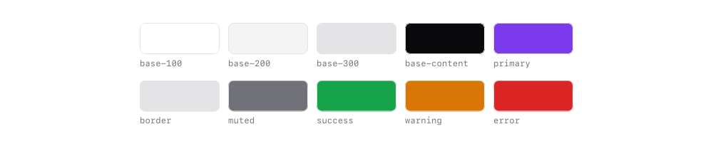
Theming
Semantic colour roles, light and dark palettes, accents and translucent tokens.
4 examples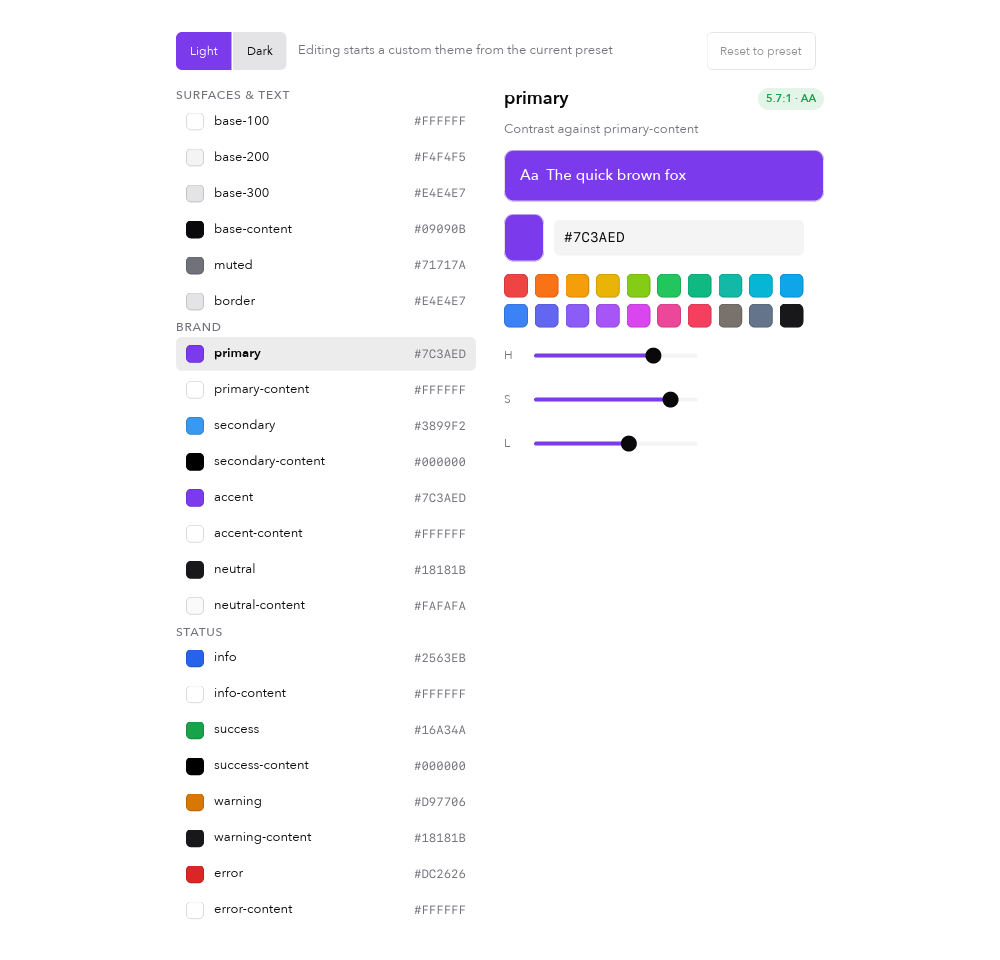
Theme editor
Edit every colour role for light and dark, check contrast, export JSON.
3 examplesAccessibility
Named controls, semantic selection and mounted scroll/focus reveal.
2 examplesLayout
Stacks, layers, spacing, alignment and responsive direction.
3 examplesUtilities
Grid, wrapping, justify, typography, gradients, borders and motion.
6 examplesComponents
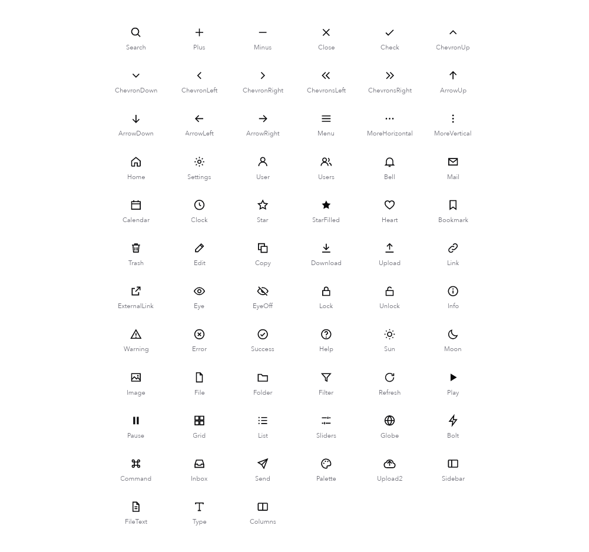
Icons
A built-in, theme-aware vector icon set.
3 examplesRich text
One paragraph with bold, italic, code, colour and decorated runs.
4 examplesBadge
A short status or count, set in a compact pill.
2 examplesButton
Triggers an action. Six variants, three sizes and a disclosure style.
3 examplesButton group
Related actions joined into one divided control.
2 examplesToolbar
A horizontal row of actions with flexible spacing.
1 exampleSegmented control
Pick one of a few mutually exclusive options.
2 examples
Tabs
Switch between views; only the active page is mounted.
2 examples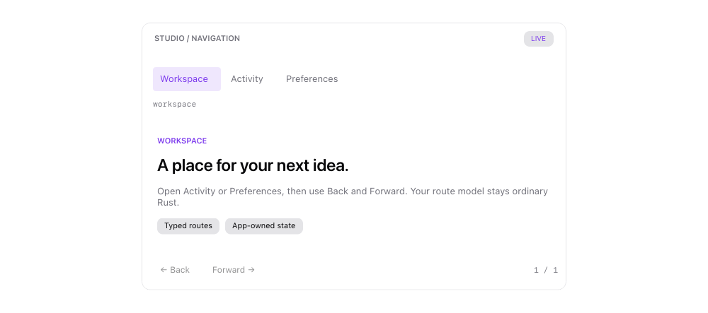
Navigation
Typed routes, Back/Forward history, accessible links and adaptable application navigation.
4 examplesCheckbox
Toggle an option on or off, with a label.
1 exampleSwitch
An on/off setting that takes effect immediately.
1 exampleText field
Single-line text entry with placeholder, password and read-only modes.
2 examplesText area
Multi-line text with soft wrap, selection, undo and IME.
1 exampleSlider
Choose a value from a continuous or stepped range.
2 examplesSelect
Choose one option from a dropdown list.
3 examplesDate & time
Calendars, date and range pickers, and a time picker.
4 examplesForm inputs
Radio groups, steppers, comboboxes, tags, ranges, colours, codes, ratings and drops.
10 examples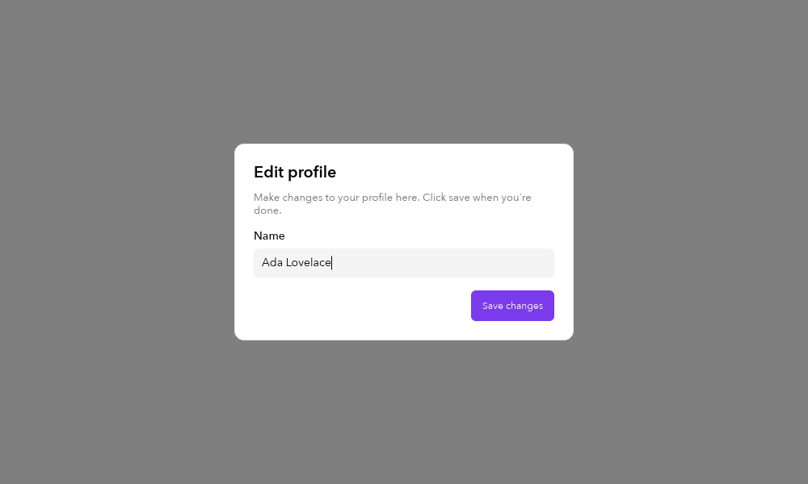
Dialog
A modal card that captures focus until dismissed.
1 exampleMenu
A list of actions opened from a trigger.
1 exampleContext menu
Actions for a surface, opened with a right click.
1 examplePopover
Rich content anchored to a trigger.
1 exampleTooltip
Short help shown on hover or keyboard focus.
1 exampleOverlays
Collapsibles, accordions, drawers, toasts, a command palette and rich menus.
7 examplesProgress
Shows how far a task has come, or that it is under way.
2 examplesSpinner
Indicates indeterminate work in a small space.
1 exampleToast
A brief notification that confirms an action.
1 exampleCard
A padded surface that groups related content.
1 exampleScroll area
Opt-in vertical, horizontal or nested scrolling.
3 examples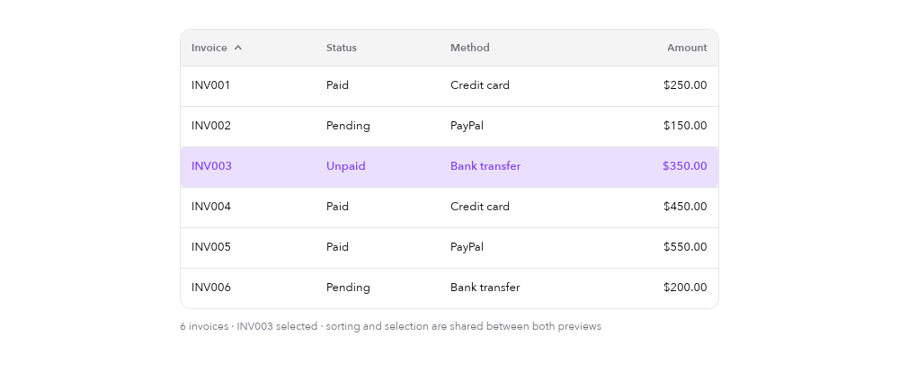
Table
Rows and columns with sorting and selection.
2 examples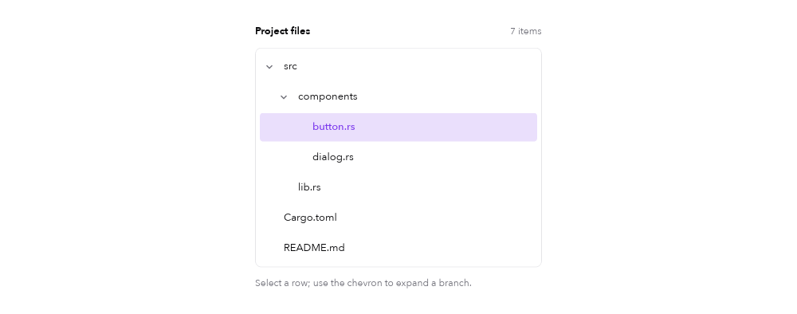
Tree view
Hierarchical items that expand and collapse.
1 example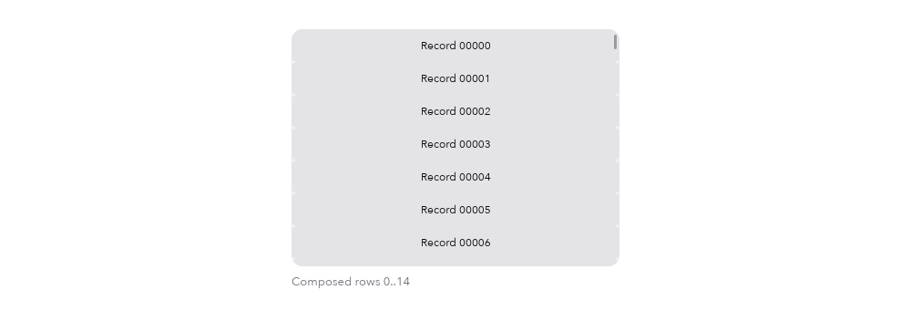
Virtual list
Thousands of rows; only the visible window is built.
1 example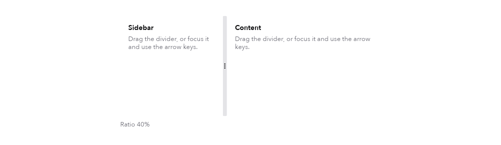
Split pane
Two panes divided by a draggable handle.
1 exampleCanvas
Retained vector paths: fills, strokes and transforms.
2 examplesImage
Image backgrounds with fit, position, opacity and clipping.
2 examplesData display
Avatars, alerts, skeletons, breadcrumbs, pagination, steps and more.
10 examples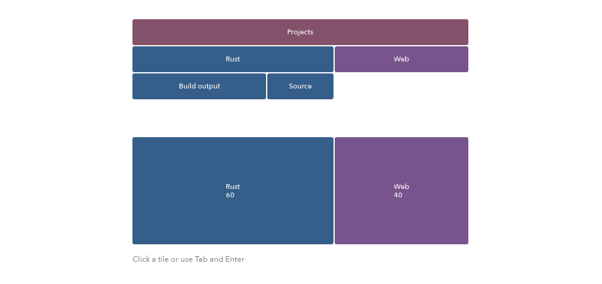
Charts
Sparklines, bar charts and line charts drawn with vector paths.
5 examples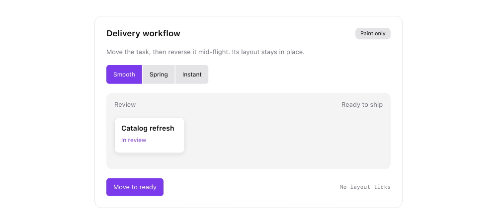
Effects & motion
Finite spring motion, staggered entrances, interaction feedback, shadows and glows.
6 examplesPatterns
Background tasks
Worker threads report progress through a bounded message queue.
1 example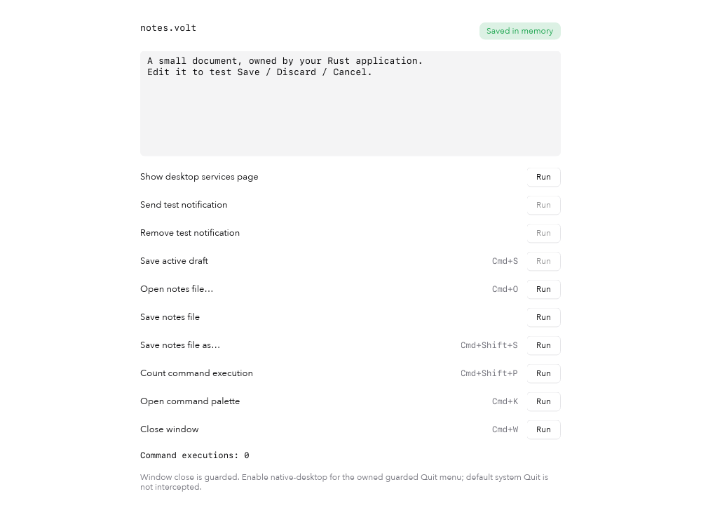
Application lifecycle
State-aware commands and guarded closing for unsaved work.
1 example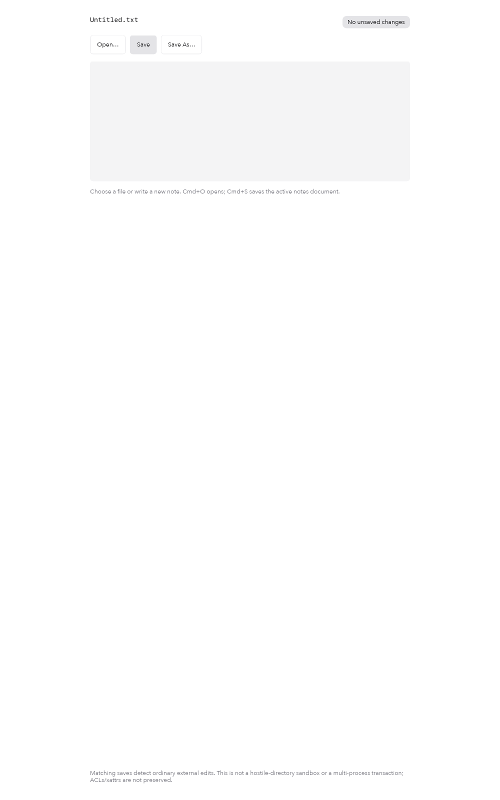
Documents
Native file panels and asynchronous document saving.
1 example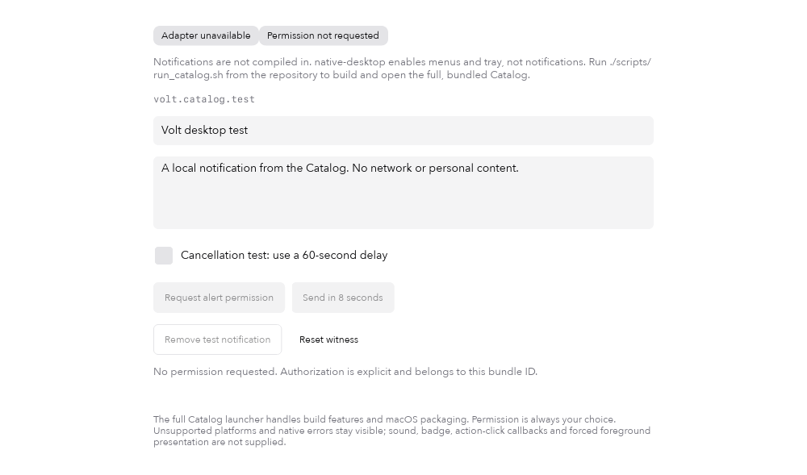
Desktop services
Explicit local notifications and shared native tray commands.
2 examples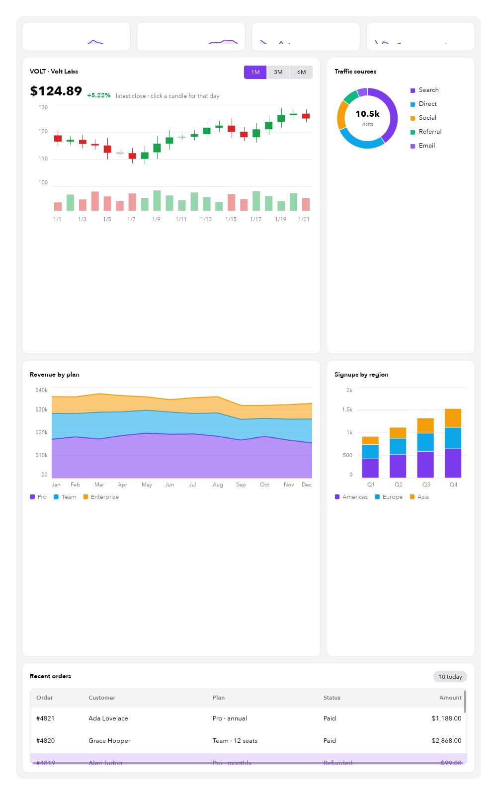
Dashboard
A dense analytics screen: KPIs, candlesticks, donut, stacked charts and orders.
1 example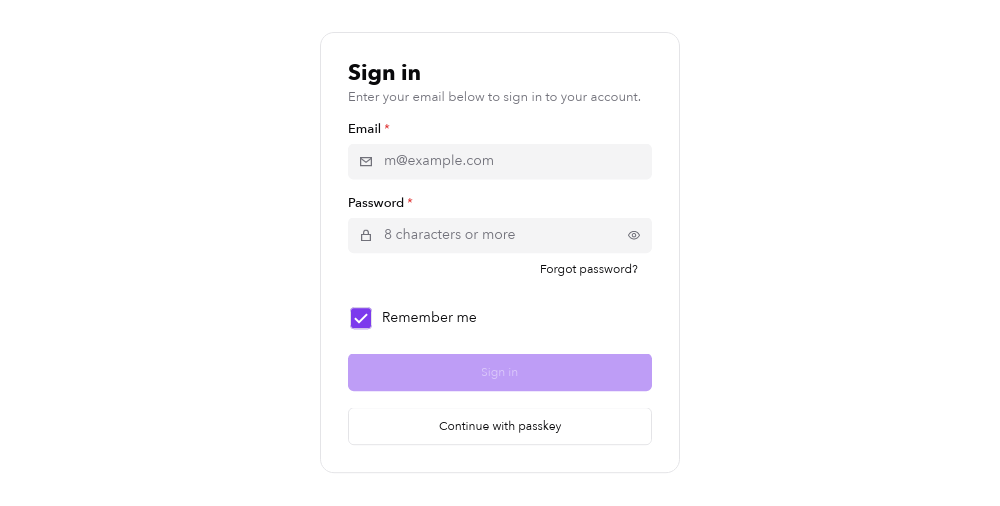
Sign-in form
Inputs, validation and actions composed into a form.
1 example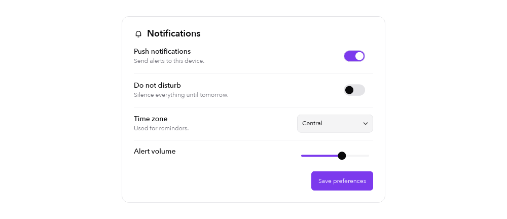
Settings panel
Grouped preferences with switches, selects and sliders.
1 example